Some devices rely on a microcontroller to initiate the pulse and time the echo. Other, more expensive, devices will have their own digital processing that generates an output that can be read from a microcontroller as one of the following:
• An analog output voltage proportional to the distance
• Serial data
• A train of varying pulse lengths dependent on the distance
In some cases, all three outputs are provided, such as with the SparkFun device SKU: SEN-00639.
Example: Assuming that in dry air at 20°C, the speed of sound is 340 meters/second, if the time period between a pulse of ultrasound being sent is 10 milliseconds, how far away is the reflecting object?
Answer: distance = velocity × time = 340 × 0.01 = 3.4m
However, that is the distance for the entire round-trip, so the actual distance to the object is half of that, or 1.7 meters.
6.3.3 Optical Distance
Another useful device for measuring distance at close range is the infrared optical sensor (see Fig. 6.13). This type of device uses the amount of reflection of a modulated infrared pulse to determine the distance to the object. The Sharp GP2Y0A21YK (SparkFun SKU: SEN-00242) is a typical sensor of this type.
FIGURE 6.13 Optical distance measurement
Infrared optical sensors are used for closer range measurements than the ultrasonic devices and produce an analog output. This is not linear or particularly accurate, so these devices are most useful for simple proximity detection rather than actual measurement.
At close range, the measurements become ambiguous, as shown in the distance/output voltage plot of Fig. 6.14. Therefore, they are usually mounted recessed so that no object can get closer than the ambiguous distance, which is about 5 cm for the sensor in Fig. 6.14.
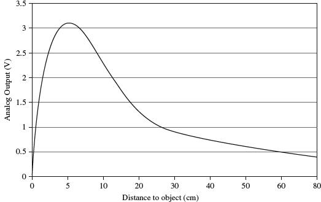
FIGURE 6.14 Output against distance for a Sharp GP2Y0A21YK
When this type of sensor is used with a microcontroller, a lookup table is used to convert the measured voltage to a distance reading.
In some circumstances, you just need to know whether or not something is present. This can be detected with a slotted optical sensor, where the infrared source and sensor are aligned with a slot in between. When the beam is broken, the object is detected.
Capacitive sensors are frequently used as proximity or touch sensors as a replacement for mechanical push switches. They sense conductors and therefore are ideal for sensing proximity of a hand or finger.
There are various different approaches to capacitive sensing, but they all follow the basic principals shown in Fig. 6.15.
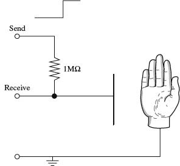
FIGURE 6.15 Capacitive sensing
In this case, the sensing is accomplished using two general-purpose input/output (GPIO) pins of a microcontroller. The Send pin is configured as an output, and the Receive pin as an input. A single fixed resistor between the two pins forms one half of an RC arrangement, with the capacitor formed by the object being sensed and a sensor plate forming the other half of the capacitor.
When a hand moves close to the plate, the capacitance increases. This is sensed as the control software toggles the state of the Send pin and times how long it takes for the Receive pin to catch up with the changed state. In this way, it effectively measures the capacitance and hence the proximity of the object being sensed. The longer it takes for the Receive pin to change to the same state as the Send pin, the closer the object is to the plate.
This type of sensing has the advantages that it requires very little special hardware and can sense through glass, plastic, and other insulators. More advanced versions of this approach can sense in two dimensions to make a capacitative touch screen.
6.3.5 Summary
Table 6.2 compares the relative merits of the different types of distance sensors.
TABLE 6.2 Distance Sensors
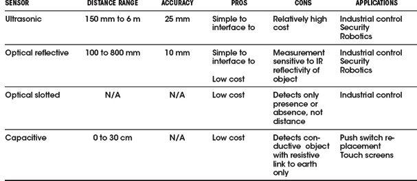
Another type of sensor that is used in industrial settings is the inductive sensor. This is in essence a mini-metal detector.
Proximity of a magnet can also be detected using magnetic sensors such as Hall effect sensors (discussed in Section 6.6.3) and even the humble read switch, which consists of a pair of contacts in a glass envelope that close when near a magnet.
6.4 Movement, Force, and Pressure
Many different types of sensors can tell us about how things are moving. This has become a common occurrence in smartphones, where an accelerometer is used to detect the orientation of the device for automatic switching of the screen between landscape and portrait format, as well as for game playing. Figure 6.16 shows a variety of different movement-detecting devices.
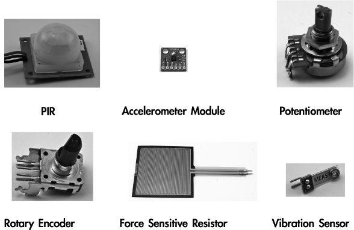
FIGURE 6.16 Movement sensors
6.4.1 Passive Infrared
Passive infrared (PIR) detectors are most commonly used in intruder alarms. They detect changes in infrared heat. Because they require a plastic lens, they are usually sold as a detector module on a printed circuit board.
More advanced movement detectors will have multiple detectors that respond to a rapid change in the level of infrared heat. When this is detected, the module may activate a relay, or in some modules, switch a transistor with an open collector arrangement.
Figure 6.17 shows how to use an open collector device such as the PIR sensor from SparkFun (SKU: SEN-08630) to give a digital output.
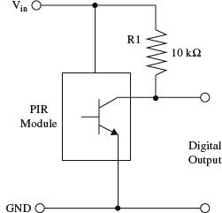
FIGURE 6.17 Using a passive infrared sensor
6.4.2 Acceleration
The ready use of accelerometers in cellular phones has led to them becoming a low-cost and readily available component. The most common of these use a technology called microelectromechanical systems (MEMS). The basic principal for these devices is to measure the position of a mass attached to a spring that stretches under acceleration (see Fig. 6.18). The neat trick is that all of this is fabricated onto an IC.
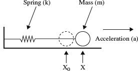
FIGURE 6.18 Mass and spring accelerometer
This arrangement is basically the same as a spring balance of the sort favored by fishermen and travelers worried about exceeding their baggage allowance. In fact, turning it through 90 degrees, you would be measuring the gravitational constant whose units are those of an acceleration. This is how an accelerometer can determine its orientation on the vertical axis.
The force acting on the mass due to the acceleration is:
F = k (x – x0) = m a
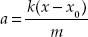
Since the manufacturer will know k and m, we just need to be able to measure the displacement of the mass m. Measuring this movement often uses the capacitive effect of the mass, in relation to one or two plates. A common arrangement is for the mass to move between two plates making a capacitive divider (see Fig. 6.19 and Section 2.23.14 in Chap. 2).
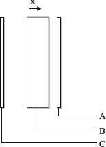
FIGURE 6.19 Measuring the offset of the mass
If the mass, shown as a rectangle in between two plates in Fig. 6.19, is halfway between the two plates A and C, then the capacitance between A and B and between B and C will be equal. An acceleration to the left of the diagram will move the weight to the right, changing the ratio of the capacitance.
Most accelerometers come in a little IC package that not only includes three accelerometers—one for each dimension—but also all the necessary electronics, analog-to-digital converters, and digital electronics to provide serial communication of the data back to a microcontroller using an I2C serial interface.
A much used low-cost accelerometer is the MMA8452Q (SparkFun SKU: COM-10953).
6.4.3 Rotation
Measuring rotation can be as simple as using a potentiometer as a voltage divider, where the voltage at the slider is proportional to the angle of rotation (see Fig. 6.20). However, the potentiometer will not measure a full 360 degrees, and it has stops at both ends of the track that prevent it from turning all the way around.
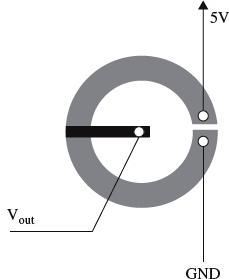
FIGURE 6.20 Measuring rotation with a potentiometer
A more flexible alternative to the potentiometer is the quadrature encoder. This type of device rotates without any stops, so you can just keep turning it. These are often used as an alternative to potentiometers in electrical appliances. They actually just measure steps to the left or steps to the right, rather than the absolute position.
A quadrature encoder is really just a pair of concentric tracks that each has a contact. They act as a pair of switches producing pulses as the shaft is rotated (see Fig. 6.21).
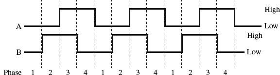
FIGURE 6.21 Outputs from a quadrature encoder
The transitions of A and B are used to determine the direction in which the shaft is being rotated. For example, a clockwise rotation would be read as going from phase 1 to 4 and a counterclockwise from 4 down to 1.
Clockwise (AB): LH HL HH HL
Counterclockwise (AB): HL HH LH LL
As you can tell, this is a digital device that will be connected directly to a microcontroller.
Quadrature encoders come in various resolutions. Low-cost ones may have only 12 pulses per revolution. Better-quality devices can have up to 200 pulses per revolution and be designed for high-speed operation of up to 30,000 rpm. Such devices will use optical sensors rather than contacts.
A variation on the quadrature encoders that measure relative rotation are absolute rotary encoders. This type of device is essentially a rotary switch with a number of tracks that then indicate the angle by providing a binary output.
Rather than count in “normal” binary, the binary numbers for each position are arranged so that only one bit changes between one position of the switch and the next. This type of encoding is called a Gray code. For example, the 3-bit Gray code looks like this: 000, 001, 011, 010, 110, 111, 101, 100.
Table 6.3 shows some of the pros and cons of rotation sensors.
TABLE 6.3 Rotation Sensors
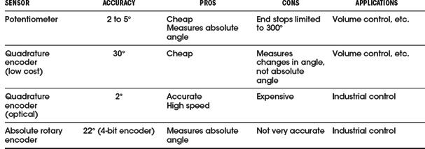
6.4.4 Flow
The simplest sensors for measuring flow are variations on some kind of paddle wheel or turbine that is placed in the flow and spins at a speed proportional to the flow. The problem of measuring the rate of rotation remains. An anemometer that measures the wind speed is a typical example of this (see Fig. 6.22).
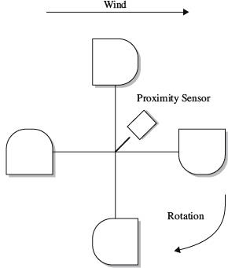
FIGURE 6.22 A cup anemometer
The wind will cause the arrangement of cups to spin at a rate of rotation proportional to the wind strength. Some fixed point on the cup assembly passes close to a proximity sensor that produces a pulse for each full rotation. In this way, you get a stream of pulses at a frequency proportional to the wind speed. Measuring the speed is then just a matter of using a microcontroller to count the number of pulses in a given period of time.
The proximity sensor may be a fixed magnet on the cup assembly and a magnetic sensor such as the Hall effect sensor (described in Section 6.6.3), or may be an optical sensor where a beam is interrupted.
Various types of fluid flow sensors are summarized in Table 6.4.
TABLE 6.4 Flow Sensors
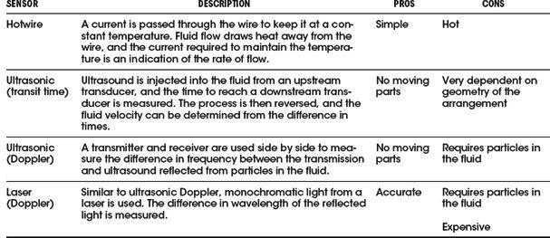
6.4.5 Force
Force can be sensed using a force-sensitive resistor. These devices operate in a similar manner to a resistive touch screen. They are two layers, with conducting tracks and a microdot insulating layer, but the harder you press, the more of the top conductor comes into contact with the bottom conductor and the lower the resistance. These devices are not usually very accurate.
Strain gauges operate on the principal of deforming the geometry of a resistor as it is put under tension or compression (see Fig. 6.23).
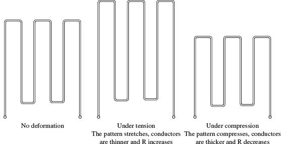
FIGURE 6.23 Strain gauge
For a more accurate sensing of force, a load cell is used. This arranges two or more strain gauges bonded onto a deformable metal block. They will often also include temperature compensation.
6.4.6 Tilt
Although an accelerometer can be used to measure the angle of tilt, or just detect tilt from the horizontal, if all that is required is to know that the sensor has tilted from the horizontal, then a simpler sensor can be used. The simplest of these use a small metal ball in a case, which sits on contacts when horizontal but rolls off when the device is tipped.
6.4.7 Vibration and Mechanical Shock
Piezoelectric materials are good for detecting shock and vibration. The vibration sensor in Fig. 6.16 uses a small weight (just a rivet) on the end of a flexible strip of piezoelectric material. When the weight wobbles due to vibration, a voltage is generated across the terminals. The output of these voltages will drift, so for practical use, place a 10 MΩ resistor in parallel with them. This same approach will work for detecting mechanical shock.
6.4.8 Pressure
Unless you plan to work in process control or build a weather station, sensing pressure is unlikely to be something that you will need to do. Except for when you have very particular sensing requirements, the solution is nearly always to buy a digital sensor on a chip, such as the two listed in Table 6.5.
TABLE 6.5 Pressure Sensors
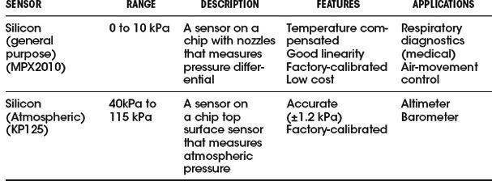
Other types of pressure sensors are on a larger scale, usually based on traditional pressure measurement, such as bellows or a Bourdon tube. These create a physical displacement that is then measured by one of the techniques discussed earlier, such as a potentiometer, a strain gauge, or capacitative position sensing like that used in an IC accelerometer.
There are many sensors available for detecting chemicals of various kinds—far too many to list here. The selection shown in Fig. 6.24 illustrates a range of the sensors available, and we’ll look at their principals of operation in the following sections.
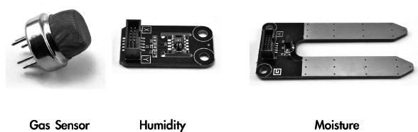
FIGURE 6.24 Chemical sensors
6.5.1 Smoke
Domestic smoke detectors are (or should be) a feature of every home. The most common devices are actually quite sophisticated in their sensing (see Fig. 6.25).
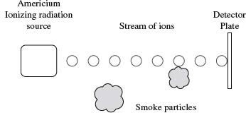
FIGURE 6.25 An ionizing smoke detector
They use a radioisotope (Americium) that generates a stream of ionized particles in a chamber that is open to the air. This allows a small current to flow between the metal casing of the radiation source and a detecting plate at the far side of the chamber.
If smoke particles enter the chamber—even microscopic particles—they attach themselves to the ions, neutralizing them and reducing the current flowing. This is detected by the control electronics.
The other common type of smoke detector (optical) uses a focused infrared LED with a photodiode, off-axis from the infrared LED. When smoke enters the sensor, the smoke particles scatter light, which can be detected by the photodiode.
6.5.2 Gas
Gas detectors, such as the MQ-4 from Hanwei Electronics (SparkFun SKU: SEN-09404) shown in Fig. 6.24, contain a small heating element and a catalytic detector to detect concentrations of methane as low as 200 parts per million. Other types of sensors use different catalysts to make them sensitive to other gases.
Using such a device involves supplying a voltage (often 5 V) to the heating element (which typically draws a few tens of milliamps) and putting the sensor pins in a voltage divider arrangement with a fixed resistor to create a measurable output voltage.
6.5.3 Humidity
Although highly accurate techniques are available for measuring humidity, in many applications, an accuracy of 1 or 2 percent is acceptable and can be achieved with a low-cost capacitative sensor. These sensors are often combined with a temperature sensor, control electronics, and a serial interface for use by a microcontroller.
Capacitative sensing relies on humidity changing the dielectric constant of a polymer separating the two plates. These devices achieve better accuracy by laser calibration; that is, they are calibrated during manufacture by using a laser to write into digital memory on the device, setting a calibration parameter.
Unless extreme accuracy is required in a very specialized application, there is little reason to use anything other than an IC humidity sensor.
6.6 Light, Radiation, Magnetism, and Sound
Figure 6.26 shows a selection of various types of sensors associated with detecting radiation or magnetism.
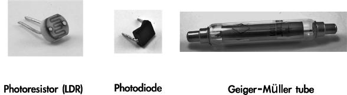
FIGURE 6.26 Light, radiation, and magnetic sensors
6.6.1 Light
Light detection is used in many different ways, from optical transmission of data to proximity detection. There are many types of sensors for this purpose, including some we have already discussed, such as the photoresistor. For information about the use of photoresistors, photodiodes, and phototransistors, see Chapter 5.
6.6.2 Ionizing Radiation
To sense ionizing radiation, a Geiger–Müller tube is usually used. These tubes contain a low-pressure inert gas such as neon. A high voltage (400 to 500 V) is applied between the outer conducting cathode and a wire anode running down the middle of the tube (see Fig. 6.27).
FIGURE 6.27 A Geiger–Müller tube
When ionizing radiation passes through the tube, the gas is ionized and conducts, producing a pulse at Vout. These pulses are counted using a Geiger counter, traditionally producing a click sound with each event.
Different tubes are designed to be more sensitive to different types of radiation. To detect alpha particles, tubes with a very thin mica end will allow the easily stopped alpha particles to pass through and be detected.
6.6.3 Magnetic Fields
In discussing sensing rotational speed in a flow meter, I suggested detecting each rotation by sensing when a magnet passed a sensor. This sensor could just be a coil of wire, in which a current would be induced. However, the slower the magnet moves past the coil, the smaller the signal available. An alternative to this is to measure the static magnetic field and just detect the presence or absence of the magnet. A common device for doing this is called a Hall effect sensor.
The Hall effect is an electrical effect that occurs when a current passes through a conductor in the presence of a magnetic field. Referring to Fig. 6.28, when current is flowing along a bar of thickness d, in the presence of a magnetic field B, a voltage VH will appear between the top and bottom surfaces of the conductor.
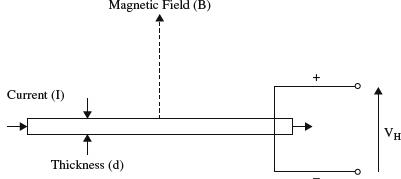
FIGURE 6.28 Hall effect sensor
The voltage from the Hall effect is given by the equation:
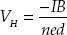
where n is the charge carrier density, e is the charge of an electron, d is the length of the conductor, I is the current flowing through it, and B is the magnetic field density.
Practical Hall effect sensors usually combine the sensor itself with high-gain amplification in a single IC. Others take this a step further and actually incorporate a serial interface to send the data to a microcontroller.
There are two types of Hall effect sensors. The most common type also acts as a switch and just provides an on-off indication of the presence of a nearby magnet. A more flexible type of Hall effect sensor (a linear sensor) provides a linear output voltage proportional to the strength of the magnetic field.
6.6.4 Sound
Sensing sound relies on using a microphone and amplifier (see Chap. 15). If you are sensing the sound level, then you will also need to use a low-pass filter and rectification to determine an indication of the level of sound (see Fig. 6.29).
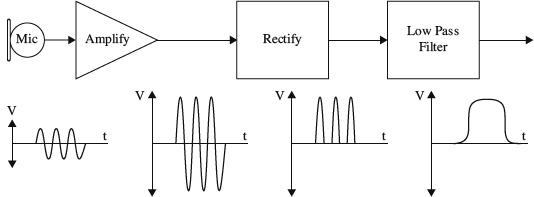
FIGURE 6.29 Sensing sound level
6.7 GPS
A side effect of consumer devices, such as smartphones and dedicated satellite navigation systems, is that GPS modules are readily available at relatively low cost.
GPS relies on a constellation of satellites (see Fig. 6.30). Each satellite contains a highly accurate clock that is synchronized with all the other satellites in the constellation. The satellites then broadcast this time signal.
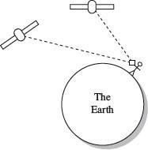
FIGURE 6.30 Global positioning system
A GPS receiver on the ground will attempt to receive time signals from as many satellites as possible and use the differences in those times, due to the time for the signals to travel, to calculate the position of the receiver.
GPS modules are generally a single IC, but require a special antenna that is usually the largest part of the module. Figure 6.31 shows the Venus 638 FLPx GPS module from SparkFun with its antenna attached. This module and modules like it have a serial interface that transmits a stream of updates giving the position of the receiver and various other information, such as the time and number of satellites currently being received.
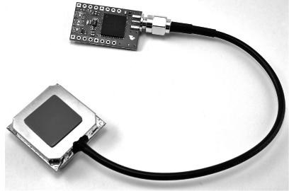
FIGURE 6.31 The SparkFun Venus638FLPx GPS module
Hands-on Electronics
7.1 Safety
7.1.1 Lecture on Safety
Probably the most hazardous thing in electronics is your household line voltage, around 120 V at 60 Hz in the United States (240 V at 50 Hz in many other countries). What often happens is an ungrounded metal object comes in contact with a hot wire, and then you touch the “hot object,” discovering in the process that your body acts as a conducting medium for current to flow to ground. (The ground and ground wires are, in effect, at the same potential as the neutral wire—they are tied together at the utility box.) The frequency and amplitude of the line voltage tend to be at the perfect levels for inducing involuntary muscle contractions that prevent you from letting go of a hot or energized object. This freezing effect is extremely dangerous. The longer you’re stuck, the more damage current will inflict upon your internal tissues (tissue heating), and the more likely you’ll suffer from cardiac and/or respiratory arrest.
Voltage and frequency levels below household line levels can cause cardiac/respiratory arrest, too (especially if your internal resistance is low, such as with a wet body), but are less likely to cause the dreaded freezing effect. Frequencies above household line levels actually are less likely to cause severe muscle contractions, so the chances of fatality decrease somewhat. At very high voltages, there is an arcing effect that can occur, which can give you a nasty jolt even if you’re not touching an object directly. The electric potential between you and the energized object is so great that the air becomes a conducting medium. Ironically, the initial jolt you receive from an arc will often be large enough to throw you clear of danger. However, besides being extremely painful, such jolts may induce cardiac/respiratory arrest, and depending on where you’re standing, the fall may be what kills you.
In more specific terms, what kills you or what causes greatest tissue damage is the amperage. When you come in contact with a live wire or energized object, the amount of current that passes through your body to ground depends on the voltage level (assuming an ideal voltage source) and your internal resistance. A heavily callused dry palm may present a resistance of 1 MΩ, while a thin, wet palm may present only 100 Ω. Resistance tends to be lower in children, and different body tissues exhibit a range of resistances. Nerves, arteries, and muscles are low in resistance. Bone, fat, and tendon are relatively high in resistance. Across the chest of an average adult, the resistance is about 70 to 100 Ω. The low resistance across the chest and the higher resistance through the air-filled lungs provide a path of least resistance through the heart and spinal cord regions—the critical regions for life support. A 100- to 1000-mA current is sufficient to induce cardiac/respiratory arrest. Thermal burns due to I2R losses through body parts can also be significant, resulting in loss of life or limb, even long after the initial exposure. Since the thermal heating effects increase with the square of the current, higher current levels truly cause nastier burns, whether they are internal or external.
As a rough guideline, a 10-mA, 50- to 60-Hz cycle line current, from hand to foot, will merely give you a tingly sensation. However, above 10 mA, at the same frequency, it’s possible you’ll freeze to the circuit you’re touching. Outlets using ground fault circuit interrupters (GFCIs) will cut power if they sense sudden ground current flow in this current range—the tripping point around 5 to 10 mA. Currents from 20 to 100 mA may be fatal, but it’s the 100-mA to 1-A range that’s the deadliest. Above 1 A, the heart is thrown into a single contraction, and internal heating becomes significant. You may be thrown clear of the power source, but then cardiac and/or respiratory arrest may ensue.
The most lethal form of electrocution occurs via hand-to-hand current flow; current passes right across the heart, lungs, and spinal cord. Hand-to-foot electrocution is less fatal, carrying a mortality rate of around 20 percent. For this reason, when working on line voltages, make sure to keep one hand in your pocket. Another safety practice is to use the back of your hand when touching unknown entities. This prevents the “grip of death.”
Consumer electronics equipment—such as TVs, computer monitors, microwave ovens, and electronic flash units—use voltage at power levels that are potentially lethal. Normally, the hazardous circuitry is safely enclosed to prevent accidental contact. However, during servicing, the cabinet or enclosure will likely be open and safety interlocks may be defeated. Depending on the type of circuitry and your general state of health, there is a wide variation of voltage, current, and total energy that can kill.
Microwave ovens are probably the most dangerous household appliance to mess around with. They operate at several thousand volts (5000 V or more), at higher current levels (more than an amp may be available momentarily). This is instantly a lethal combination.
Old-fashioned cathode-ray tube TVs and monitors may have 35 kV on the cathode-ray tube, with current lower than a couple of milliamps. However, the cathode-ray tube capacitance can hold a painful charge for quite some time. In addition, portions of the circuitry within TVs and monitors, as well as all other devices that plug into the wall socket (such as switching power supplies), are line connected. These circuits’ internal grounds may be several hundred volts higher than the utility earth ground. Without isolation between the 120 V and the circuit, a real potential shock hazard exists if you come in contact with the circuit’s floating ground (see the discussion of isolation transformers in Section 7.5.12). Switch-mode power supplies, electronic flash units, and strobe lights have large energy storage capacitors that can deliver a lethal discharge, long after the power has been removed. This even applies to disposable cameras with a flash. Even portions of apparently harmless devices like VCRs and CD players, or vacuum cleaners and toasters, can be hazardous (though the live parts may be insulated or protected, you shouldn’t count on it).
The following list of safety tips will help you prolong your life.
ELECTRONICS SAFETY TIPS
1. Do not attempt repairs on line-powered circuits with the power on. Always remove the main power first.
2. Use one hand when taking measurements, and keep your other hand at your side or in your pocket. If you do get shocked, it’s less likely that current will pass through your heart.
3. If you need to probe, solder, or otherwise touch circuits with the power off, discharge (across) a large power supply filter or an energy-storage capacitor with a 2-W or greater resistor of 100 to 500 Ω/V; for example, for a 200-V capacitor, use a 20- to 100-KΩ resistor. (A screwdriver’s metal tip is often used to discharge a capacitor, but the sudden discharge may not be well tolerated by the capacitor.) Monitor while discharging and verify that there is no residual charge with a suitable voltmeter. Large capacitors can store a lethal amount of charge and may retain the charge for a number of days. Even capacitors rated at voltages as low as 5 or 10 V can be dangerous.
4. Perform as many tests as possible with the power off and the equipment unplugged. For example, the semiconductors in the power supply section can be tested for short circuits with an ohmmeter.
5. Avoid standing in a position that could be dangerous if you were to lose muscle control due to shock. Often the fall alone is more dangerous than the initial shock.
6. When working on high-power circuits, bring someone else along who can assist you if something goes wrong. If you see that someone cannot let go of a “hot” object, do not grab onto that person. Instead, use a stick or insulated object to push the person away from the source. It’s not a bad idea to learn CPR, too.
7. All high-voltage test instruments (such as power supplies, signal generators, and oscilloscopes) that are operated on a 120 or 240 V ac supply should use three-wire line cable.
8. Use only shielded (insulated) lead probes when testing circuits. Never allow your fingers to slip down to the metal probe tip when testing a “hot” circuit. Also, make sure to remove power from a circuit when making a connection with wires and cables.
9. Connect/disconnect any test leads with the equipment unpowered or unplugged. Use clip leads or solder temporary wires to reach cramped or difficult-to-access locations. If you must probe live, put electrical tape over all but the last 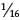 of the test probe to avoid the possibility of an accidental short that could cause damage to various components. Clip the reference end of the meter or scope to the appropriate ground return so that you need to probe with only one hand.
10. If circuit boards need to be removed from their mounting, put insulating material between the boards and anything they may short to. Hold them in place with string or electrical tape. Prop them up with insulation sticks made of plastic or wood.
11. Set up your work area away from possible grounds that you may accidentally contact.
12. When working on ac-line circuits, wearing rubber-bottomed shoes or sneakers, or standing on a sheet of rubber or wood, can reduce possible shocks.
13. The use of a GFCI-protected outlet is a good idea, but it will not protect you from shock from many points in a line-connected device, such as a TV, monitor, or the high-voltage side of a microwave oven. (Note that a GFCI may be a nuisance by tripping at power-on or at other random times due to leakage paths, like your scope probe ground, or due to the highly capacitive or inductive input characteristics of line-powered equipment.)
14. A fuse or circuit breaker is too slow and insensitive to provide any protection for you or, in many cases, your equipment. However, these devices may save your scope probe ground wire should you accidentally connect it to a live chassis.
15. Know your equipment. TVs and monitors may use parts of the metal chassis as the ground return, yet the chassis may be electrically live with respect to the earth ground of the ac line. Microwave ovens use the chassis as the ground return for the high voltage. In addition, do not assume that the chassis is a suitable ground for your test equipment! Use an isolation transformer if there is any chance of contacting line-connected circuits. A Variac is not isolated, so you need a combination of a Variac and an isolation transformer for safety.
16. Make sure all components that are connected to ac power lines meet required power ratings.
17. When building power supplies and other instruments, make sure that all wires and components are enclosed in a metal box or insulated plastic enclosure. If you use a metal box, it is important that you ground the conductive shell (attach a wire from the inner surface of the box to the ground wire of the power cable, preferably with a screw along with solder). Grounding a metal box eliminates shock incurred as a result of a hot wire coming loose and falling onto the box, thereby making the whole box hot.
18. When making holes in metal boxes through which to insert an ac line cable, place a rubber grommet around the inner edge of the hole to eliminate the chance of fraying the cable.
19. Wear eye protection: large plastic-lens eyeglasses or safety goggles.
20. Don’t wear any jewelry or other articles that could accidentally contact circuitry and conduct current.
7.1.2 Damaging Components with Electrostatic Discharge
Scuffling across a carpet while wearing sneakers on a dry day can result in a transfer of electrons from the carpet to your body. In such a case, it is entirely possible that you will assume a potential of 1000 V relative to ground. Handling a polyethylene bag can result in static voltages of 300 V or more, whereas combing your hair can result in voltages as high as 2500 V. The drier the conditions (lower the humidity), the greater the chance is for these large voltages to form. Now, the amount of electrostatic discharge (ESD) that can result from an electrostatically charged body coming in contact with a grounded object is not of much concern in terms of human standards. However, the situation is entirely different when subjecting certain types of semiconductor devices to similar discharges.
Devices that are particularly vulnerable to damage include field-effect transistors, such as MOSFETs and JFETs. For example, a MOSFET, with its delicate gate-channel oxide insulator, can be destroyed easily if an electrostatically charged individual touches its gate. The gate-channel breakdown voltage will be exceeded, and a hole will be blown through the insulator, which will destroy the transistor. Here is a rundown of the vulnerable devices out there:
 Extremely vulnerable: MOS transistors, MOS ICs, JFETs, laser diodes, microwave transistors, and metal film resistors
Extremely vulnerable: MOS transistors, MOS ICs, JFETs, laser diodes, microwave transistors, and metal film resistors Moderately vulnerable: CMOS ICs, LS TTL ICs, Schottky TTL ICs, Schottky diodes, and linear ICs
Somewhat vulnerable: TTL ICs, small signal diodes and transistors, and piezoelectric crystals
Not vulnerable: Capacitors, carbon-composite resistors, inductors, and many other analog devices
7.1.3 Component Handling Precautions
Devices that are highly vulnerable to damage are often marked with “Caution, components subject to damage by static electricity.” If you see a label like this, use the following precautions:
Store components in their original packages, in electrically conductive containers (such as a metal sheet or aluminum foil), or in conductive foam packages.
Do not touch leads of ESD-sensitive components.
Discharge the static electricity on your body before touching components by touching a grounded metal surface such as a water pipe or large appliance.
Never allow your clothing to make contact with components.
Ground tabletops and soldering irons (or use a battery-powered soldering iron). You also should ground yourself with a conductive wrist guard that’s connected with a wire to ground.
Never install or remove an ESD-sensitive component into or from a circuit when power is applied. Once the component is installed, the chances for damage are greatly reduced.
While these risks are real, and you will no doubt occasionally lose a component to static, it is also important to keep a sense of perspective and take the necessary precautions around devices that you know are expensive or vulnerable. You certainly do not need to wear a grounded wrist strap all the time.
7.2 Constructing Circuits
This section briefly discusses the steps involved in building a working circuit: drawing a circuit schematic, building a prototype, making a permanent circuit, finding a suitable enclosure for the circuit, and applying a sequence of troubleshooting steps to fix improperly functioning circuits.
7.2.1 Drawing a Circuit Schematic
The circuit schematic, or circuit diagram, is a blueprint of a circuit. For a schematic to be effective, it must include all the information necessary so that you or anyone else reading it can figure out what parts to buy, how to assemble the parts, and possibly what kind of output behavior to expect. The following are guidelines for making an easy-to-read, unambiguous schematic:
The standard convention used when drawing a schematic is to place inputs on the left, outputs on the right, positive supply terminals on the top, and negative supply or ground terminals on the bottom of the drawing.
Keep functional groups—such as amplifiers, input stages, filters, and so on—separated within the schematic. This will make it easier to isolate problems during the testing phase.
Give all circuit components symbol designations (such as R1, C3, Q1, and IC4), and provide the exact size or type of component information (such as 100 k, 0.1 μF, 2N2222, or 741). It is also important to include the power rating for certain devices, such as resistors, capacitors, relays, speakers, and so on.
Use abbreviations for large-valued components (for example, 100 kΩ instead of 100,000 Ω, or 100 pF instead of 100 × 10−12 F). Common unit prefixes include p = 10−12, n = 10−9, μ = 10−6, k = 103, and M = 106.
When labeling ICs, place lead designations (such as pin numbers) on the outside of the device symbol, and place the name of the device on the inside.
In certain circuits where the exact shape of a waveform is of importance (such as logic circuits and inverting circuits), it is helpful to place a picture of the expected waveforms at locations of interest on your circuit diagram. This will help isolate problems later during the testing phase.
Power-supply connections to op amps and digital ICs are usually assumed and typically left out of the schematic. However, if you anticipate confusion later on, include these supply voltages in your drawing.
To indicate joined wires, place a dot at the junction point. Unjoined wires simply cross (do not include a dot in such cases).
Include a title area near the bottom of the page that contains the circuit name, the designer’s name, and the date. It is also useful to leave room for a list of revisions.
FIGURE 7.1
Once you have completed the circuit schematic, see if anything looks fishy. Are there missing connections or missing component values? Are component polarities indicated? Have you considered the power ratings of the components? Have you made connections as simple as possible? It is better to check things now; finding an error when you are soldering things together is much more annoying than erasing a few lines on a drawing.
You can draw the schematic with a pencil on paper, and often this is good enough while you are developing the project, especially if it is a simple one. However, at some stage, you will probably want to draw the circuit using an electronic computer-aided design (CAD) tool. The advantages of using a CAD tool are as follows:
When you modify your schematic, the diagram stays clear in a way that a schematic with a lot of erasing doesn’t.
A good CAD system will apply electrical design rules to your schematic—at the very least, warning you about unconnected leads.
A CAD system provides two views of a project: the schematic and the printed circuit board (PCB) layout. You can usually automatically route and lay out a PCB from the schematic.
To be able to lay out a PCB, the CAD package needs to know about the geometry of the component. A catalog of components is supplied that contains information about the component package and pin assignments. Manufacturers will often provide component libraries for CAD packages.
There are many electronic CAD packages, including some that are very expensive. One of the most popular is EAGLE CAD. A free version of this product is available that restricts use to relatively small PCBs and a maximum of two layers of copper. Options for CAD packages are listed in Section 7.5.22. Most require a reasonable investment in time to learn to use properly.
If a full-blown CAD system is more than you need (or are prepared to learn), an alternative is to use a general-purpose drawing tool such as Microsoft Visio or OmniGraffle, both of which have libraries of electronics component symbols available.
7.2.2 A Note on Circuit Simulator Programs
Now, before you build a circuit, or even before you finish the schematic, you might consider using a circuit simulator program to test your idea to see if it works. Circuit simulator programs allow you to construct a computer model of your circuit and then test it (measure voltages, currents, wave patterns, logic states, and so on) without ever needing to touch a real component. A typical simulator program contains a library of analog and digital devices, both discrete and integrated in form. If you wish to model an oscillator circuit—one that is built from a few bipolar transistors, some resistors, a capacitor, and a dc power supply—all you do is select the parts from the library, set the values of these parts, and then arrange the parts to form an oscillator circuit.
To test the circuit, simply choose one of the simulator’s test instruments, and then attach the test instrument’s probes to the desired test points within the circuit. For example, if you are interested in what the output waveform of the oscillator looks like, choose the simulator’s oscilloscope, and then attach the test leads and measure the output. The computer screen will then display a voltage versus time graph of the output. Some other instruments found in simulator programs include multimeters, logic analyzers, function generators, and bode plotters.
Why make a computer simulation of a circuit before building a real one? For several reasons:
When you make a computer simulation, you do not need to worry about working with faulty components.
There is no need to worry about destroying components with excessive current; the computer program does not “care about the numbers.”
A simulator program does all the mathematical work for you. The simulator allows you to fiddle around with component values until the circuit is working as desired.
Using a simulator program can make learning electronics an intuitive process and saves time spent at the workbench.
Some popular simulator programs include Electronics Workbench, CircuitMaker, and MicroSim/Pspice. Electronics Workbench and CircuitMaker are relatively easy to use, while Pspice is a bit more technical.
7.2.3 Making a Prototype of Your Circuit
Once you are satisfied with the schematic, the next step is to make a prototype of your circuit. The most common tool used during the prototype phase is a solderless modular breadboard. A breadboard acts as a temporary assembly board on which electrical parts such as resistors, transistors, and ICs are placed and joined together by wires or built-in conductive pathways hidden underneath the surface of the breadboard (see Fig. 7.2).
FIGURE 7.2
Breadboards come with an array of small square sockets spaced about 0.100 in from center to center. When a wire or component lead is inserted into one of these sockets, a spring-like metal sleeve built into the socket acts to hold the wire or lead in place. Breadboard sockets are designed to accept 22-gauge wire but can expand to fit wire diameters between 0.015 and 0.032 in (0.38 and 0.81 mm). The upper and lower rows of sockets of a breadboard typically are reserved for power-supply connections, while the sockets between the central gap region are reserved for DIP ICs.
7.2.4 The Final Circuit
Once you are finished making a successful prototype, the next step is to construct a more permanent circuit. At this point, you must choose the type of mounting board on which to place your circuit. Your choices include a perforated board, a wire-wrap board, a pre-etched board, or a custom-etched PCB. Let’s take a closer look at each of these boards.
Perforated Board
A perforated board is an insulated board with an array of holes drilled into it (see Fig. 7.3). To join a lead from one electrical component to another, each of the components’ leads is placed through neighboring holes. The lead ends sticking out the back side of the board are then twisted together (and possibly soldered).
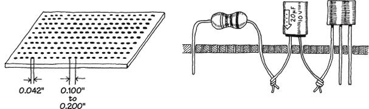
FIGURE 7.3
Constructing a circuit on a perforated board is easy. Few supplies are needed, and making connections does not require much skill. However, what you get in the end is a fairly bulky circuit that is liable to fall apart over time and may pick up noise inadvertently (jumper wires will act like little antennas). In general, perforated boards are used for constructing simple, noncritical types of circuits.
Using a wire-wrap board is another way to assemble moderately complex circuits containing ICs. Every wire-wrap board is made up of an array of sockets, each of which has a corresponding pin-like extension sticking out of the opposite side of the board (see Fig. 7.4).
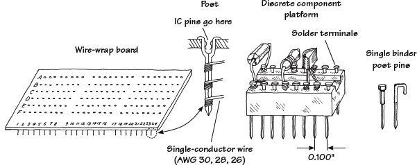
FIGURE 7.4
IC leads are inserted directly into the wire-wrap’s sockets, while discrete components, such as resistors, capacitors, and transistors, must be mounted on special platforms like blocks or single post-like pins (see Fig. 7.4b). Each of these platforms contains a number of nail-like heads on which discrete component leads are attached, either by coiling the leads around the nail head or by fastening the leads to the nail head with solder. The nail-like tips of the platforms are then inserted into the board’s sockets.
To connect components together, the pins on the back side of the wire-wrap board are joined together with wires (typically 30-, 28-, or 26-gauge single-conductor wires). In order to fasten the joining wires to the pins, a special wire-wrap tool is used (see Fig. 7.5). This tool wraps the joining wire around the pin by means of a bit section that rotates around a hollow core. The wire is inserted into the bit, the hollow core is placed over the pin, and then the wire-wrap tool is twisted several times (usually around seven times) and removed.
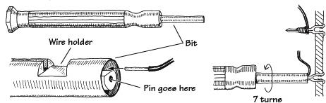
FIGURE 7.5
In practice, to save time and avoid making mistakes, it is desirable to do all the wrapping in a single pass. To follow this approach, some bookkeeping is required. Notice in Fig. 7.4a that each socket/pin is given a row/column designation. For example, a pin located three rows down and two rows in from the left is given a C2 designation, and a pin that is located five rows down and seven rows in is given an E7 designation.
To figure out how to arrange electrical components on the board, making a simple sketch of the wire-wrap board is helpful. On the sketch, draw in all the components, fixing each component lead to a specific row/column coordinate. Once the sketch is complete, simply grab your wire-wrap tool and start making wire connections between the pins, using the sketch as a guide.
Wire-wrap boards are suitable platforms for circuits that contain a number of ICs, such as logic circuits. However, because the sockets of these boards are not designed for linear component leads (you must use platforms in such cases), it may be easier to use a pre-etched, or custom-etched PCB for building analog circuits.
Pre-etched Perforated Boards
A pre-etched perforated board is made of an insulating material that is coated with a pre-etched copper pattern and has a number of holes drilled into it. To join electrical components, simply place the leads of the components in the appropriate holes that are joined by a copper-etched strip, and then apply solder.
Pre-etched boards come with a variety of different etched patterns. Figure 7.6 shows samples of the kinds of patterns available.
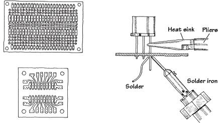
FIGURE 7.6
Custom-Etched Boards (PCBs)
If you are looking to build a circuit with a professional appearance, designing a custom-etched circuit board, or PCB, is the ticket, and the next section describes how to do this.
Designing custom-etched circuit boards takes a bit longer, but the time spent is often well worth the effort. There are times when making a custom-etched board is essential to ensure proper circuit operation, especially when dealing with circuits that contain components whose properties are greatly influenced by the length of the leads. For example, very high-speed logic circuits require the unique microstrip line geometries and precise placement of components to achieve fast rise times and at the same time avoid crosstalk among circuit elements. Sensitive low-level amplifier circuits also benefit from well-placed microstrip interconnections; the short and direct interconnections help eliminate noise pickup.
7.2.5 Making a PCB
To create the PCB layout, you can either draw the design by hand or use a CAD tool. Once you have the design, you have a number of choices for actually creating the board:
Using an etch-resistant pen
Printing the layout onto overhead projector (OHP) transparency film and using photosensitive board
Using laser printer toner transfer
Using CAD and a desktop router to cut out the pattern on the copper-clad board
Sending the Gerber design files away to a PCB shop
Each of these approaches has pros and cons. The last option has started to become cost-effective, with prices as low as a dollar a board for a run of ten boards, and will produce professional-quality results. However, you do need to wait, sometimes for a week or two.
We will look at each of these approaches in turn.
Etch-Resistant Pen
Custom etching involves using graphic and chemical techniques to convert a copper-covered board into a custom-etched one. By doing your own custom etching, you can construct highly reliable, tightly compact circuits that require few jumper wires (see Fig. 7.7).
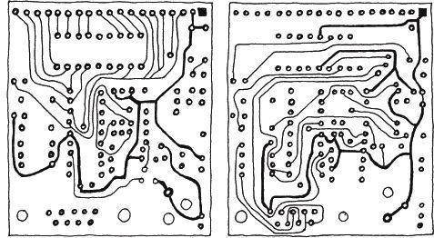
FIGURE 7.7
To design a custom-etched PCB, you first need an insulated board (usually  in. thick and made from a fire-resistant epoxy-bonded fiberglass) that is completely covered on one or both sides with a very thin copper coating. Next, you must transform your circuit schematic into a PCB layout. This involves rearranging components in such ways as to make all conductive pathways short and direct. The layout should also eliminate any wire crossing, if possible.
in. thick and made from a fire-resistant epoxy-bonded fiberglass) that is completely covered on one or both sides with a very thin copper coating. Next, you must transform your circuit schematic into a PCB layout. This involves rearranging components in such ways as to make all conductive pathways short and direct. The layout should also eliminate any wire crossing, if possible.
Once you feel that your hardwired sketch is complete, the next step is to transfer it onto the copper-coated board. Afterward, the trick is to etch out all the undesired copper-coated sections while leaving the conductive pathways intact.
At this point, there are a number of different transferring/etching techniques from which you can choose. Perhaps the simplest technique involves using a PCB kit, which you can buy for a few bucks from a store such as RadioShack. A typical kit comes with a single or dual copper-coated board, a bottle of etching solvent, a permanent marker, a bottle of rubbing alcohol, and a drill bit.
To make your custom-etched board, you first transfer your hardwired sketch onto the surface of the board with, say, a pencil. Next, you drill in the appropriate holes where component leads are to go. Now, with the etch-resistant pen, you trace over the pencil sketch, making sure to encircle the drilled-out holes. After that, you place the board in a tub of etching solvent (typically ferric chloride) and wait until the copper dissolves away from the sections of the board that are not coated with magic-marker ink (the ink does not dissolve in the solvent; it acts to protect the underlying copper). After the board is removed from the solvent bath, it is washed off with water, and the magic-marker ink is then removed with a rag doused in rubbing alcohol.
Using a PCB kit is great for simple, single-run productions. PCB kits are easy to use, inexpensive, and require practically no special equipment other than what is provided in the kit itself. However, one problem with these kits is that you can construct only one circuit board at a time. Another problem with these kits is the limited precision you get by using a magic marker to create conductive pathways. If you are interested in making multiple copies of a circuit, and if you are looking for greater line precision, a more sophisticated technique that involves photochemical processes is required.
Photo-etching with OHP Transparency Film
Only the simplest of designs are really suited to hand-drawn PCB design. If you invest the time to learn a CAD system, it is unlikely that you will go back to the manual approach.
A great advantage of having your PCB design in a CAD system is that you can print it. For this technique, you print it onto transparent film, of the type that used to be used on overhead projectors. This film is available in letter and A4 sizes and comes in two types: one for laser printers and one for inkjet printers. Don’t put the inkjet film into a laser printer (it is likely to melt onto the drum).
Using EAGLE PCB, as shown in Fig. 7.8, you can see the schematic (a), the PCB with all the component positions and labels (b), and, finally, just the copper (c).
FIGURE 7.8 EAGLE PCB, schematic and copper layer
The process followed here is to draw the schematic and then switch to the board view. Here, you drag the components onto the board, leaving airwires connecting the components according to the schematic. You can then load a set of design rules and click a button, and a PCB layout will be generated automatically. You will probably want to intervene, and rip up some of the wires and route them your own way, but generally, the automated layout isn’t a bad start.
Once the design is printed onto the film, it is placed on top of presensitized copper-clad board. This board is PCB with a photosensitive layer that hardens when exposed to UV light. This is available from most hobby electronic stores. While short exposure to room lighting will do it no harm, you should keep it in a light-proof container.
The board-film sandwich is often held in a frame (a clip photo frame will do) while an exposure is made using a UV light box. The board is then put into a tray of developer, and the image of the PCB tracks will become visible on the board, just like an old-fashioned photograph being developed.
Next, the board is etched in a chemical that dissolves the copper except where it is protected by the photographic image of the PCB tracks. This part of the process is the same as for a pen-drawn PCB.
Figure 7.9 shows a homemade photo-etching kit that uses an array of UV LEDs inside an index card box to provide the UV exposure. Commercial kits are available, of course.
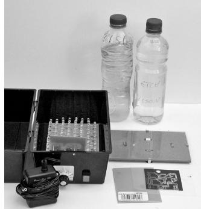
FIGURE 7.9 A photo-etching kit
Note that the black areas will end up as copper. Quite large areas of black can be seen on the film. This reduces the quantity of copper that needs to be dissolved and hence extends the life of the chemical. The large areas of copper are generally connected to GND and are termed a ground plane.
Laser Printer Toner Transfer
A variation on the transparency film option is to print the PCB layout onto special paper using a laser printer, and then use a domestic iron to transfer the toner onto the copper-clad board. In this case, the image must be printed reversed.
With practice, good results can be achieved with this technique, which has the advantage of not requiring special tools. There are a number of Internet videos and tutorials describing this approach.
Creating a PCB with a Router
Low-cost desktop CNC routers offer a chemical-free method of producing PCBs by using normal copper-clad PCB, but then using a computer-controlled CNC router to cut away the unwanted copper (see Fig. 7.10).
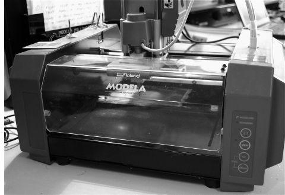
FIGURE 7.10 A CNC router cutting a PCB
The process is similar to the photo-etching method. Once the PCB artwork is done, the copper layer is dispatched to the router as if it were a printer.
Using a PCB Service
It used to be that designing a PCB was a very specialized skill, and in some ways, it still is. For very complex projects heading toward quantity production, the services of a specialist PCB design company are worth considering.
However, programs like EAGLE PCB will take a lot of the difficulty away, both by automating the track layout on the PCB and enforcing design rules such as minimum track widths, separations, and so on. This makes it entirely feasible to design your own PCBs and submit the finished design files to a PCB service. This service is likely to be almost entirely automated, so you will need to make sure your design is right before you send it, because these services will not check your design.
A PCB service will produce a great-looking result. All of these services generally allow a two-layer board, which provides a top and bottom copper layer. What is great is that they also do the following:
Create the vias that link a track on one layer to one beneath it.
Provide a silk-screen layer that can label the components and mark their positions.
Provide a mask layer that covers all the copper not actually intended to be soldered.
Figure 7.11 shows a typical PCB produced by such a service. The cost for ten of these boards can be as low as $10 plus shipping.
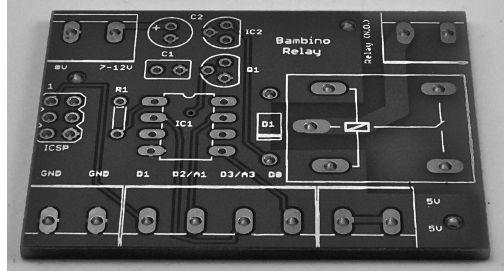
FIGURE 7.11 A PCB created by a PCB services
The design files that you send to a PCB service are called Gerber files. Table 7.1 shows the files that you should submit. Each of the files has a different extension that indicates its contents. The computer-aided manufacturing (CAM) job feature of EAGLE CAD will produce these files for you automatically, using a CAM job file that you will find in the instructions on the PCB service’s web site.
TABLE 7.1 Gerber File Types for CAM
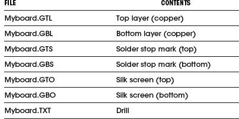
All that remains to do is to pay, create a zip file containing the files, and e-mail them to the PCB service. Your boards will come back in the post days or weeks later, depending on the service level you chose.
Some PCB services will also accept EAGLE CAD .brd files and other CAD formats without requiring the generation of Gerber files.
When schematics get even a little complicated, you rapidly find that trying to route everything on one layer of copper becomes impossible, and a two-layer board becomes necessary. The top and bottom layers can either connect where a component lead naturally passes through both layers or using vias that are holes in the board just to allow a trace to jump layers.
New and better PCB deals come along all the time, so check the newsgroups to see what people are using. Two useful providers are Itead Studio (www.iteadstudio.com) and Elektor PCB Service (www.elektor.com).
A Note About Board Layout
When arranging components on a circuit board, ICs and resistors should be placed in rows and should all be pointing in the same direction. Also, make sure to leave about a 2mm border around the circuit board to allow room for card lifters, guides, and standoffs.
Bring power supply leads or other I/O leads to the edge of the board, connecting them through an edge connector, D-connector, barrier-strip connector, or single-binder posts fixed to the edge of the board. Avoid mounting heavy components on circuit boards to prevent damage in case of a fall.
It is also a good idea to place polarity marking on the board next to devices such as diodes and electrolytic capacitors. Placing labels next to IC pins is also helpful. Consider labeling test points, trimmer functions (such as zero adjustment), inputs and outputs, indicator light functions, and power-supply terminals as well.
7.2.6 Special Pieces of Hardware Used in Circuit Construction
Three pieces of hardware are used frequently during the construction phase: prototyping boards with I/O interfacing gold-plated fingers, IC and transistor socket holders, and heat sinks.
Prototyping boards with gold-plated fingers typically are inserted into a card cage along with a number of other boards. Each board is inserted through a plastic guide and into an edge connector. Separate boards can be linked by means of a flat multiple-conductor cable (see Fig. 7.12a). The nice thing about these boards is that you can easily remove them from a cage to work on them, without making a mess of things in the process. When designing multiple-board devices, it is wise to use a separate board for each functional group of a circuit (for example, amplifier sections, memory-chip sections, and so on). This will make it easy to find and fix problems later on.
FIGURE 7.12
IC sockets are used in situations where there is a good chance that the device they house will need replacing (see Fig. 7.12b). It is tempting to use such holders everywhere within a circuit; however, placing too many IC sockets in a circuit board can lead to headaches later on. Often, the socket sections of these holders are poorly designed and may prove unreliable over time.
Heat sinks are metal devices with large surface areas that are connected to heat-generating devices (such as power diodes and transistors) to help dissipate heat energy. A heat sink is usually connected to a component by means of a screw and washer fastener (see Fig. 7.12c). Silicon grease placed between the washer and heat sink is often used to enhance the thermal conductivity between the electrical component and heat sink.
7.2.7 Soldering
Solder is a tin-lead (these days, mostly without the lead) alloy used to join component leads together. Electrical solder often comes with a rosin flux mixed in, which is used to dissolve oxides that are present on the metal surfaces to be joined. Recent legislation in Europe (known as the Restriction of Hazardous Substances Directive, or RoHS) has outlawed the use of lead in consumer electronics. In the United States, there are tax incentives to reduce the use of lead. This has led (no pun intended) to the development of lead-free solders.
Before solder can be applied with a soldering iron, all metal surfaces must be cleansed of oils, silicones, waxes, or grease. Use a solvent, steel wool, or fine sandpaper to remove undesirable residue.
When soldering PCBs, use a low-wattage iron (25 to 40 W). To ensure good soldering connections, a thin, bright coating of molten solder should be present on the tip of the iron. With time, this coat becomes contaminated with oxides and should be renewed by wiping its surface with a sponge and then reapplying fresh solder. (Applying a fresh coat of solder to the tip of an iron is referred to as tinning an iron.)
The trick to making good soldering connections is to first heat the two metal pieces to be joined. Do not melt the solder first; otherwise, you will not be able to control the placement of the molten solder. Solder likes to flow toward hot spots.
Also when working on a circuit, make sure not to splatter solder on your board. If a small piece of solder lands between two separate conductive lines, you will end up shorting them. When you are finished soldering, inspect your work carefully for stray solder spatters and for a good sound joint.
To protect sensitive components from the heat of the soldering iron’s tip, heat-sink components by gripping the component lead with a needle-nose pliers. Special heat-sink clips are also available for this purpose.
7.2.8 Desoldering
If you make a bad connection or need to replace a component, you must melt the solder and start over again. But simply melting the solder and then attempting to yank the part while the solder is still wet is not always easy. This is especially true when it comes to dealing with ICs.
The trick to freeing a component from the solder’s hold is to first melt the solder and then remove the solder with an aspiration tool, or “sucker.” An aspiration tool typically resembles a turkey baster or a large syringe-like device. Another method that can be used to remove solder is to use a solder wick. This device resembles a braided copper wire and acts to draw solder away from a connection by means of capillary action.
7.2.9 Enclosing the Circuit
Circuits typically are enclosed in either an aluminum or plastic box. Aluminum enclosures are often used when designing high-voltage devices, whereas plastic containers typically are used for lower-voltage applications. If you design a high-voltage circuit housed in an aluminum box, make sure to ground the box to avoid getting shocked.
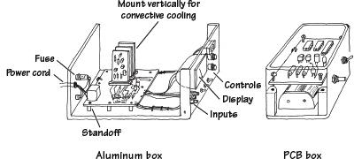
FIGURE 7.13
Circuit boards that are placed within an aluminum box should be supported off the ground with standoffs. If the circuit is ac-powered, drill a hole through the back side of the box, and insert a strain relief that grips the cable and a grommet around the edges of the hole. Place frequently used switches, dials, and indicators on the front panel, and place seldom-used switches and fuses on the back panel.
If you expect that your circuit will be generating a lot of heat (running more than 10 W or so), consider installing a blower fan. For circuits running on moderately low power, simple perforated holes placed on the top and bottom of the box will aid in conductive cooling.
Place major heat-producing components, such as power resistors and transistors, toward the back of the box, connecting them through the back panel to heat sinks. Make sure to orient heat sinks with their fins in the vertical direction. Also, if you are building a multiple-board cage device, align all boards vertically to allow for efficient ventilation.
Plastic boxes usually come with built-in standoffs on which to rest the circuit board. Typically, these boxes allow for extra room underneath the board for items such as batteries and speakers.
7.2.10 Useful Items to Keep Handy
The following items are worth having at your workbench:
Needle-nose pliers
Snippers
Solder
Soldering iron
Solder sucker
IC inserter
Lead bender
Solvent
Clip-on heat sinks
Circuit-board holder
Screws (flathead and roundhead)
Nuts
Flat and lock washers (4-40, 6-32, 10-24)
Binding posts
Grommets
Standoffs
Cable clamps
Line cord
Hookup wire
Shrink tubing in assorted sizes
Eyelets
Fuse holders
7.2.11 Troubleshooting the Circuits You Build
If your circuit is malfunctioning, see if you have overlooked any suggestion in the troubleshooting flowchart in Fig. 7.14.
FIGURE 7.14
7.3 Multimeters
A multimeter, or volt-ohm-milliammeter (VOM), is an instrument used to measure current, voltage, and resistance. The two most common types of multimeters include the analog VOM and the digital VOM, as shown in Fig. 7.15.
FIGURE 7.15
The obvious difference between the two types of VOMs is that an analog VOM uses a moving-pointer mechanism that swings along a calibrated scale, while the digital VOM uses some complex digital circuitry to convert input measurements into a digitally displayed reading. Technically speaking, analog VOMs are somewhat less accurate than digital VOMs (they typically have a 3 percent higher error in reading than a digital VOM), and multiple scales make them harder to read. Also, the resolution (displayable accuracy) for an analog VOM is roughly 1 part in 100, as compared with a 1 part in 1000 resolution for a digital VOM. Despite these limitations, analog VOMs are superior to digital VOMs when it comes to testing circuits that contain considerable electrical noise. Unlike digital VOMs, which may go blank when noise is present, analog VOMs are relatively immune to such disturbances.
Here, we’ll look at how these devices work. Also see Section 7.5.3, which discusses which type of multimeter you may need for your electronics laboratory.
7.3.1 Basic Operation
Measuring Voltages
The trick to measuring voltages with a VOM is to turn the selector knob to the voltage setting. If you want to measure a dc voltage, the knob is turned to the appropriate dc voltage-level setting. If you wish to measure an ac voltage, the knob is turned to the ac voltage setting (Vac, or Vrms). Note that the displayed voltage in the Vac setting is the RMS voltage (Vrms = 0.707 Vpeak-to-peak). Once the VOM is set correctly, the voltage between two points in a circuit can be measured by touching the VOM’s probes to these points (the VOM is placed in parallel). For example, Fig. 7.16 shows the procedure used to measure the voltage drop across a resistor.
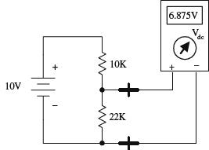
FIGURE 7.16
Measuring Currents
Measuring currents with a VOM is almost as easy as measuring voltages. The only difference (besides changing the setting) is that you must break the test circuit at the location where you wish to make a current reading. Once the circuit is open, the two probes of the VOM are placed across the break to complete the circuit (VOM is placed in series). Fig. 7.17 shows how this is done. When measuring ac currents, the VOM must be set to the RMS current setting.
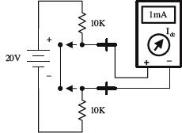
FIGURE 7.17
Measuring Resistances
Measuring resistances with a VOM is simple enough: remove the power to the resistive section of interest, and then place the VOM’s probes across this section. Of course, make sure to turn the VOM selector knob to the ohms setting beforehand.
FIGURE 7.18
7.3.2 How Analog VOMs Work
An analog VOM contains an ammeter, voltmeter, and ohmmeter all in one. In principle, understanding how each one of these meters works individually will help to explain how an analog VOM works as a whole.
Ammeter
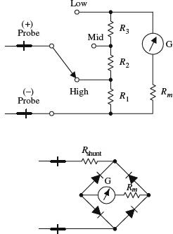
An ammeter uses a D-Arsonval galvanometer that consists of a current-controlled electromagnetic that imparts a torque on a spring-loaded rotatable needle. The amount of deflection of the needle is proportional to the current flow through the electromagnet. The electromagnetic coil has some resistance built in, which means you need to throw Rm into the circuit, as shown in Fig. 7.19. (Rm is typically around 2 k or so.)
Now, a galvanometer alone could be used to measure currents directly; however, if the input current is excessively large, it will force the needle beyond the viewable scale. To avoid this effect, a number of shunt resistors placed in parallel with the galvanometer make up a current divider capable of diverting some of the “needle-bending” current away from the galvanometer. The current value read from the display must be read from the appropriate ruler marking on the display that corresponds to the shunt resistance chosen.
To make this device capable of measuring ac currents, a bridge rectifier can be incorporated into the design to provide a dc current to the galvanometer (see the lower circuit). The dc current will produce a needle swing that is proportional to the alternating voltage measured. A typical ammeter has about a 2-k input resistance. Ideally, an ammeter should have zero input resistance.
FIGURE 7.19
Voltmeter
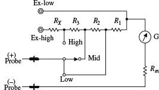
An analog voltmeter, like the ammeter, also uses a D-Arsonval galvanometer. Again, the galvanometer has some internal resistance (Rm). When the voltmeter’s leads are placed across a voltage difference, a current will flow from the higher potential to lower potential, going through the galvanometer in the process. The current flow and the needle deflection are proportional to the voltage difference.
Again, as with the ammeter, shunt resistors are used to calibrate and control the amount of needle deflection. To make ac voltage measurements, a bridge rectifier, like the one shown in the previous example, can be incorporated into the meter’s design. A typical voltmeter has an input resistance of 100 k. An ideal voltmeter should have infinite input resistance.
FIGURE 7.20
Ohmmeter
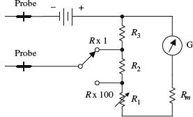
To measure resistance, an ohmmeter uses an internal battery to supply a current through the measured load and through a galvanometer (the load and galvanometer are in series). If the tested load is small, a large current will flow through the galvanometer, and a large deflection will occur. However, if the tested load resistance is large, the current flow and the deflection will be small. (In a VOM, the ohmmeter calibration markings are backward: 0 W is set to the right of the scale.)
The amount of current flow through the galvanometer is proportional to the load resistance. The ohmmeter is first calibrated by shorting the probe leads together and then zeroing the needle. Like the other meters, an ohmmeter uses a number of shunt resistors to control and calibrate the needle deflections. A typical ohmmeter has an input resistance of about 50 Ω. An ideal ohmmeter should have zero input resistance.
FIGURE 7.21
7.3.3 How Digital Multimeters Work
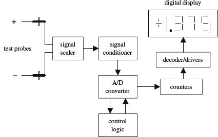
A digital multimeter is composed of a number of functional groups, as shown in the block diagram. The signal scaler is an attenuator amplifier that acts as a range selector. The signal conditioner converts the scaled input signal to a dc voltage within the range of the analog-to-digital converter (A/D converter). In the case of ac voltage measurements, the ac voltage is converted into a dc voltage via a precision rectifier-filter combination. The gain of the active filter is set to provide a dc level equal to the RMS value of the ac input voltage or current.
The signal conditioner also contains circuits to convert current and/or resistance into proportional dc voltages. The A/D converter converts the dc analog input voltage into a digital output voltage. The digital display provides a digital readout of the measured input. Control logic is used to synchronize the operation of the A/D converter and digital display.
FIGURE 7.22
7.3.4 A Note on Measurement Errors
When measuring the current through (or voltage/resistance across) a load, the reading obtained from the VOM will always be different when compared with the true value present before the meter was connected. This error comes from the internal resistance of the VOM.
For each setting (ammeter, voltmeter, and ohmmeter), there will be a different internal resistance. A real ammeter typically will have a small input resistance of around 2 k, while a voltmeter may have an internal resistance of 100 k or more. For an ohmmeter, the internal resistance is usually around 50 Ω. It is crucial to know these internal resistances in order to make accurate measurements. The following examples show how large the percentage error in readings can be for meters with corresponding input resistances.
Current-Measurement Error
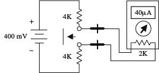
If an ammeter has an input resistance of 2 k, calculate the percentage error in reading for the circuit shown here.
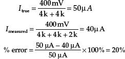
FIGURE 7.23
Voltage-Measurement Error
If a voltmeter has an input resistance of 100 k, calculate the percentage error in reading for the circuit shown here.
FIGURE 7.24
Resistance-Measurement Error
If an ohmmeter has an input resistance of 50 Ω, calculate the percentage error in reading for the circuit shown here.
FIGURE 7.25